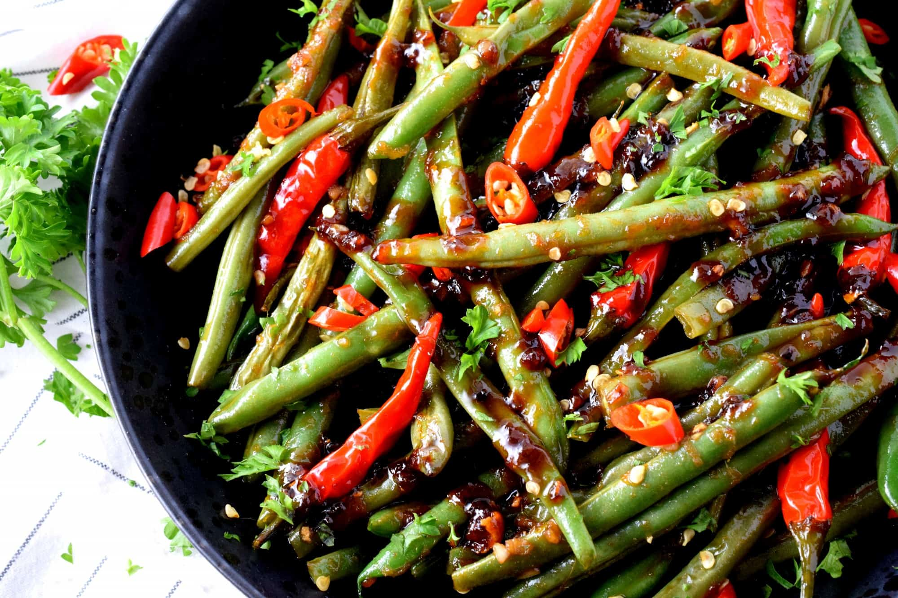

Szechuan Green Beans

Szechuan Green Beans
Ingredients
Green Beans
Salt
Pepper
Garlic Powder
Olive Oil
Sesame Seeds
Sauce
Oyster Sauce
Soy Sauce
Pineapple Juice
Toasted Sesame Oil
Directions
Toss green beans in salt, pepper, garlic powder, and olive oil.
450 deg F for 12-14 minutes.
Toss green beans in bowl with sauce and sesame seeds
Home